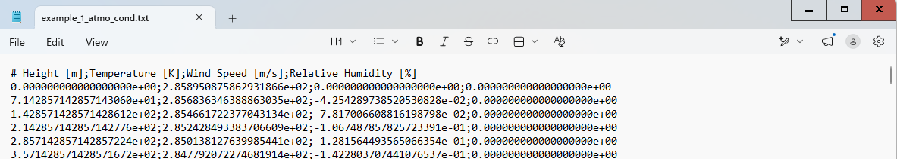
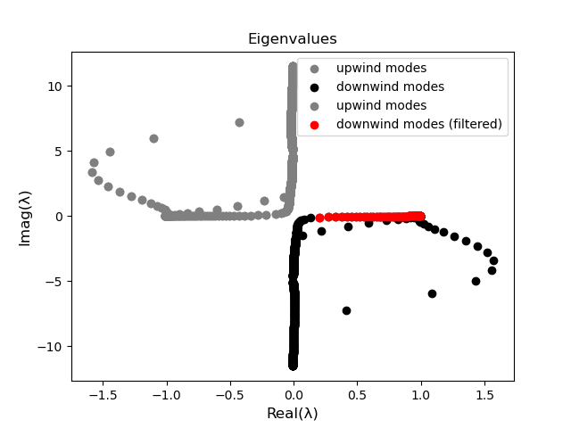

Example 1¶
The large-scale, low-frequency sound propagation in https://doi.org/10.1121/10.0003567 (Figure 11), http://dx.doi.org/10.1121/1.4976067 (Figure 7) and https://doi.org/10.1016/j.enganabound.2025.106308 (Figure 4) is solved with the package. The problem is of particular interest because of the complex atmospheric conditions and the resulting atmopsheric waveguides that are formed at low-, medium- and high-altitudes.
This example follows the workflow depicted in Schematic 1 in (inserir link) and the results are detailed in Section 3.1 of the same article.
Computing the Vertical Atmospheric (VA) Modes¶
A Safe computation must be initiated.
from safe_vamd.safe_computation import SAFEComputation
safe_comp = SAFEComputation()
The setup of the computation can be run with:
input_file = "example_1_atmo_cond.txt"
safe_comp.setup(input_file, 180, rho_at_ground=1.235, g_value=9.81, pml_thick_factor=2)
The .txt file with the background atmospheric conditions is given in the example folder under the name “example_1_atmo_cond.txt”. It has the following format:

After setting up, the VA modes can be computed with:
acoustic_field = safe_comp.solve(alpha_value=0.4, air_absorption=False)
, where the parameter alpha_value is a term for added absorption in the Perfectly Matched Layer. In this example, air absorption is not accounted for.
After the modes have been computed, a figure with the mode eignevalues plotted in the complex-plane will show up. The user can double check if the modes have been correctly separated into downwind and upwind.

The VA modes can, finally, be exported into .txt files with:
safe_comp.save_modes_in_txt()
Matching the VA modes to the acosutic pressure samples.¶
Vertical Atmospheric Mode Decomposition can be applied with the methods in the VAMD class:
from safe_vamd.vamd import VAMD
vamd = VAMD()
After the VA modes have been computed and stored in *.txt* files, they can be loaded:
downwind_path = "downwind_modes.txt"
upwind_path = "upwind_modes.txt"
vamd.load_modes_from_txt(downwind_path=down_path, upwind_path=up_path)
and then filtered by resorting to the methods in the mode_filter attribute:
n_desired_modes = 320 # (or 380)
vamd.mode_filter.sort_by_imag_part(side="downwind") # sorting from less to more decaying
vamd.mode_filter.filter_by_energy([0, 140 * 1000], 0.95, side="downwind") # removing PML modes
vamd.acoustic_field.downwind_modes = vamd.acoustic_field.downwind_modes[0:n_desired_modes] # truncating mode basis
To ensure the correct filtering of the modes, their eigenvalues can be plotted before and after filtering has been applied:
vamd.mode_filter.plot_eigenvalues(upwind_color='grey', downwind_color='black'
### any mode fitlering here ###
vamd.mode_filter.plot_eigenvalues(upwind_color='grey', downwind_color='red',
downwind_label='downwind modes (filtered)', mk=True)
, which for this example would generate the following image:

The samples can be loaded with:
vamd.load_samples_from_txt("./samples/samples_x=7p5km+10km.txt")
the .txt files with the acoustic pressure samples has the following format:

The samples can be matched to the samples with:
acoustic_field = vamd.match_modes_to_samples(spread_3d=False)
After the VA modes have been matched to the samples, the example script also includes some post-processing and plotting. The generated contour plot for the normalized acoustic pressure is presented here:

, along with the transmission (in dB) along a horizontal line 1 km from the ground: